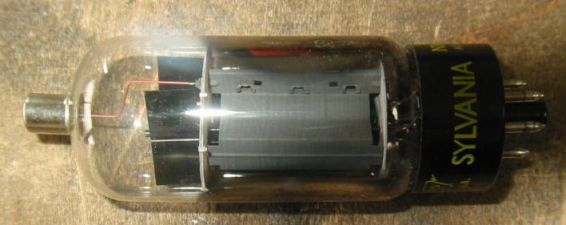
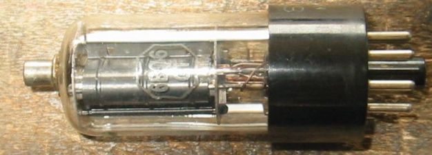
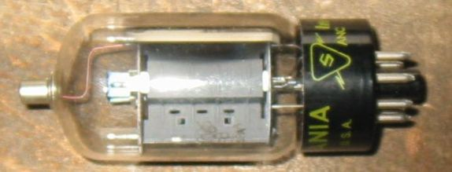
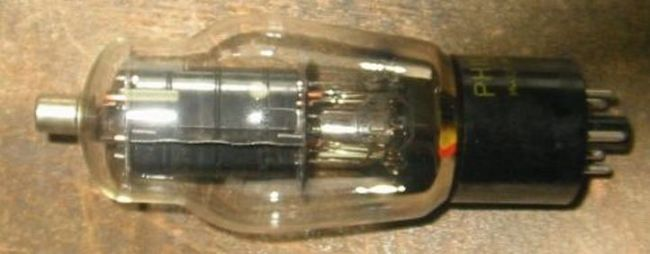
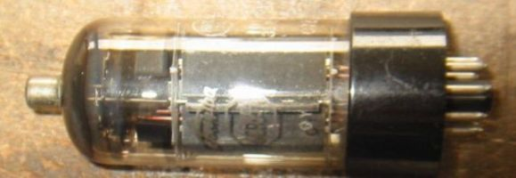
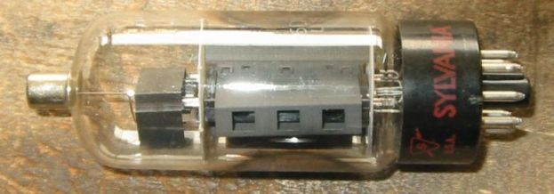
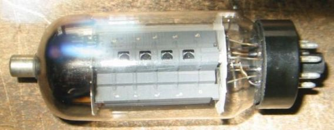
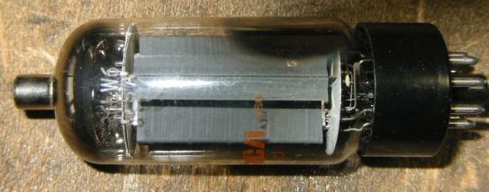

| 型名 | 規格 | その他 |
|---|---|---|
| 6BG6/6BG6GA/19BG66/25BG6 | Ef/If=6.3V/0.9A、Ep/Pp=700V/20W、Esg/Psg=350V/3.3W、 Gm=6000μ、μ2=8  | 807のプレートパルス耐圧を上げ、かつ家電用にコストダウンを図ったもの。
*6BG6についてのその他のデータ |
| 6BQ6/12BQ6/ 6CU6/6BQ6GTB/6AV5/12AV5 | Ef/If=6.3V/1.2A、Ep/Pp=600V/11w、Esg/Psg=200v/2.5W、Gm=5900μ、μ2=4.3  | *6BQ6シングル3結アンプの試作 |
| 6DQ6/12DQ6/6GV5/6GW6 | Ef/If=6.3V/1.2A、Ep/Pp=700/15W、Esg/Psg=200/3W、Gm=6000、μ2=4,3 6DQ6A/B Ep/Pp=770/18W、Esg/Psg=220/3.6W、Gm=6600/7300、μ2=4  |
*6DQ6についてのその他のデータ |
| 6CD6G/6CD6GA/25CD6GB | Ef/If=6.3V/2.5A、Ep/Pp=700V/20W、Esg/Psg=175V/3W、Gm=7700、μ2=3.9、  | *6CD6についてのその他のデータ |
| 6CB5A | Ef/If=6.3V/2.5A、Ep/Pp=700V/23W、Esg/Psg=200V/3.6W、Gm=8800、μ2=3.8、  | *6CB5についてのその他のデータ |
| 6DQ5 | Ef/If=6.3V/2.5A、Ep/Pp=900V/24W、Esg/Psg=175V/3.3W、Gm=10500、μ2=3.3、  | *6DQ5についてのその他のデータ |
| 6LW6/36LW6 | Ef/If=6.3V/2.65A、Ep/Pp=900V/40W、Esg/Psg=280V/7W、Gm=?、μ2=?、
  |
この球については詳しいデータがありません.。 6LF6と並ぶ最大の水平出力管です。 |